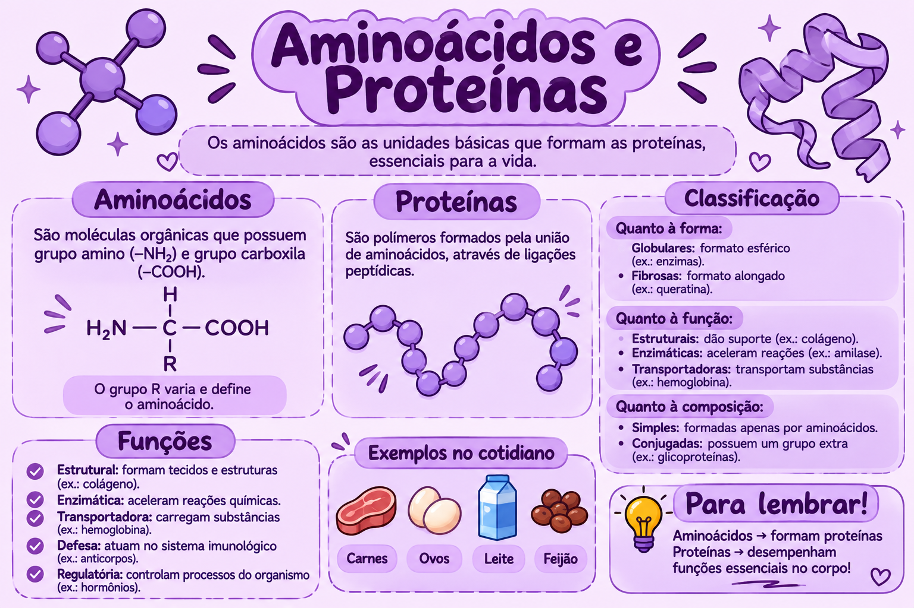

Proteínas: o que são e como surgem?
As proteínas surgem através dos aminoácidos, que são moléculas orgânicas que possuem, pelo menos, um grupo amina (-NH2) e um grupo carboxila (-COOH) em sua estrutura. Os aminoácidos são utilizados na síntese de proteínas, as quais constituem músculos, tendões, cartilagens, tecido conjuntivo, unhas e cabelos, além de alguns hormônios. Assim, eles ligam-se entre si para formar as proteínas, sendo, portanto, a "matéria-prima" desses macronutrientes.